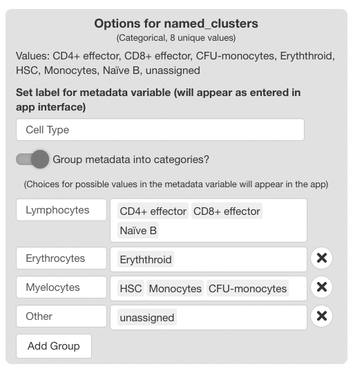

scExploreR Config App Documentation
Source:vignettes/config_documentation.Rmd
config_documentation.RmdThe scExploreR config app is used to configure single-cell objects for display in the main browser. This vignette will walk through the operation of the app and detail all settings that may be adjusted.
For guidelines on preparing objects before loading them into the config app, see the object guidelines vignette, and see the app setup walkthrough vignette for an interactive walkthrough of both object preparation and use of the config app.
Running the config app
The config app can be ran from R Studio or the console by entering the following command:
run_config(
object_path = "./object.rds",
config_path = NULL
)The object_path argument is required. It must be an set
to one of the following:
- For Seurat objects, the path to the .rds file.
- For SingleCellExperiment objects, the path to the .rds file. If the
object has been saved via
HDF5Array::saveHDF5SummarizedExperiment(), this should be the path to the directory created. - For anndata objects, the path to the .h5ad file.
The config_path argument is optional and is used to load
an existing config file into the app for further editing (for more on
this, see loading a config file
below).
Warning
If you are loading a SingleCellExperiment saved using the
HDF5Array package, you must additionally provide the
parameter is_HDF5SummarizedExperiment = TRUE. The config
app will not load successfully unless you do this.
Note
Make sure that the config file loaded is based on the same object as the one specified. We recommend naming your config files using the convention “{object_name}_config.yaml” to avoid confusion.
General Info Tab
Upon loading the config app, the “General” tab will be displayed. This tab is used to enter information on the dataset that will be displayed in the main app when the user opens the “Choose Dataset” window.
Use “Label for Dataset” to enter a short label for the dataset. Add detailed info for the dataset using the “Description of Dataset” field.

Use the “Content for Dataset Preview” menu to optionally add a plot as a preview image in the “Choose Dataset” window of the main app. When selecting “DimPlot” as a preview option, a window will appear below with settings for the plot, and a window showing the plot as it will appear in the main app.
Plot Settings
Use the “Metadata to Group By” to choose the variable for coloring the cells. If the “Label Groups” checkbox is enabled, each color group will also be labeled with the value it represents.The “Metadata to Split By” menu may optionally be used to select a variable to “split” the plot, and the number of columns in a split plot can be controlled with the “Number of columns” slider. The projection used for the plot is set with “Choose Reduction”.
Assays Tab
Settings for the assays to be included in the Seurat object are entered in the assays tab.
Adding/Removing Assays
To choose which assays to expose in the browser, use the “Choose assays to include” menu in the left half of the window. All assays added to the object will appear on the left hand side of the two-column menu, under “Available Assays”. Select an assay from this tab to add it to the browser. The assay will now appear under the “Selected Assays” column, and a panel of options specific to the assay will appear on the right half of the app window. To remove an assay from the browser, click the assay name in the “Selected Assays” tab.

General Options
On the upper right-hand corner of the screen, a panel of general assay-related options is displayed. The available options are explained below.
“Choose Genes Assay”
The assay selected in this menu will be the assay used when computing differential expression. It does not effect plotting.
Note, if you wish to include only non-gene assays in the object, you may designate those assays as the “genes” assay, but this may cause issues with the DGE and correlation analyses. The analyses are validated for gene expression only, and may not be accurate when using other data types. We will address means of including these data types in analyses in the future.
“Choose ADT Assay”
If you have a surface protein (ADT) assay in your object, you can specify the assay here to define ADT thresholds. ADT thresholds transform expression data for plots to filter out cells that are unlikely to express the ADT in reality, improving the clarity of feature plots. For more information, see the “ADT Threshold Tab” section.
Options for Each Assay
Each assay-specific panel will have a text box for entering a label, and a checkbox for including the name of the assay on plots. The label appears in the feature selection menus, and it may be set to a descriptive name to improve the presentation of the main browser (i.e. displaying the genes assay as “Genes”, or the ADT assay as “Surface Protein”, rather than using the Seurat defaults “RNA” and “ADT”). If the checkbox is selected, the label entered will display on plots. For example, if the label is “Gene”, feature plots for the gene “TP53” will have a default title of “TP53 (Gene)” instead of just “TP53”.

Metadata Tab
The metadata tab is used to specify which metadata variables to include, and to set settings for each metadata variable.
Adding/Removing/Sorting Metadata
Use the “Choose Metadata to Include” menu on the
left side of the screen to choose metadata variables to include in the
browser. Initially, all variables in object@meta.data will
display under the “Available Metadata” column. To
include a metadata variable, click and drag the variable to the
“Included Metadata” section.
Which metadata should I include? We recommend including variables that are directly related to the experimental design and are easily understood by your target audience. Variables describing properties such as cell type, sample, or patient, or those related to experimental design such as control vs. treated cells, or timepoint, should be included in the browser. It is not recommended to include variables such as the capture chemistry used in scRNA-seq, or cell type annotations that are not biologically relevant (such as numbered clusters applied by Seurat, unless you have not identified these clusters or you have determined they are relevant to your target audience).
The order the variables appear in this column is recognized by the browser; metadata in the plotting and subset menus will appear in the order set here. The first variable will be the default variable used for coloring plots; we highly recommend setting this to “clusters”, “cell type”, or a similar variable. To remove a variable, drag it back to the “Available Metadata” column.

General Options
“Patient/Sample Variable”
The variable chosen in this selection menu will be the one used for the “Metadata Pie Chart” plot in the main app. If your dataset consists of multiple samples (or patients), choose the metadata variable that corresponds to sample or patient to allow users to view composition of the dataset at the sample level (for example, seeing how many patients are in one treatment category or time point versus another, as opposed to how many cells).
Options for Each Metadata Variable
A panel of options will appear on the right side of the screen for each metadata variable included. The header of each panel will display the name of the variable as it appears in the object, whether the variable is categorical or numeric, and how many unique values of the variable exist. Beneath the header, unique values are displayed to assist in the identification and naming of variables.
Currently, only categorical metadata is available for inclusion in the object, since numeric metadata does not yet work with the subset menus. Support for numeric metadata will be added in a future release.
Use the “Set label for metadata variable” text box to set a display name in the app. The name entered here will display in all plotting menus that use categorical metadata, as well as in subset menus in all three tabs.
The “Group metadata into categories?” switch is used to create display groups using the values in the metadata variable. The groups chosen here are displayed in the main app as a guide for choosing subsets in either of the tabs of the main app. This is useful in cases where the dataset contains samples from different experimental groups. Grouping samples in the config app aids the end user in understanding which samples fall in which treatment group. Groups may also be used for clustering detailed cell annotations into more general annotations for facilitated interpretation by the end user.

Using the Metadata Groups Interface
Enable the “Group metadata into categories?” switch to display the interface. Two fields will display initially for the first group.
The first field is used to choose a name for the group, and the second field is used to choose group members from the classes of the variable. Available classes will appear as you type.
To add additional groups, press the “Add Group” button. For each group added, fields for the group name and members will appear.
To delete a group, click the “X” button to the right of each field. The first field can’t be deleted; to omit this field, disable the “Group metadata into categories?” switch.
Reductions Tab
The reductions tab is used to set the dimensional reductions (projections) to include in the object, and in which order to display them. The selections here affect all DimPlots and Feature Plots in the app.
Click and drag reductions from the “Available Reductions” to the “Included Reductions” section to include them in the app. The order the reductions appear will be the order they will display in the in-app menus, and the first reduction in the config app will be the default projection displayed in the app. Click and drag the reductions to change their order.
For each reduction, the label may be set. The reduction will appear in the app as it is labeled here.
ADT Threshold Tab
For Seurat Objects with ADT assays, the ADT Threshold Tab allows the user to choose thresholds below which the biological expression of ADTs is likely zero, even if the expression values themselves is greater than zero. The use of this tab will help remove statistical noise from the measurements, giving the end user a more accurate picture of where surface proteins are being expressed in a sample.
Enabling the ADT Threshold Tab
The ADT Threshold Tab is hidden by default. To show the tab, make a selection under “Choose ADT Assay” in the assays tab.

Adding ADT Thresholds
To add an ADT threshold, click the “New Threshold” button in the ADT threshold tab, and then use search menu that appears to the right of the table to search for an ADT.
When an ADT is selected in the search menu, a ridge plot showing the distribution of expression values in each cell will appear below the menu. Click the plot to set a threshold for the ADT. To aid in placement of the threshold, a grey vertical line will appear when mousing over the plot, and a darker line will appear at the last value selected.
When a selection is made, a panel of statistics will display below the plot. The panel will show the value of the chosen threshold, and the number and percentage of cells above and below the threshold.
To save a threshold, click the “Confirm” button beneath the stats panel. To exit without saving the threshold, click “Cancel”. When a threshold is saved, it will appear on the table of saved thresholds on the left hand side of the screen.

Editing and Deleting ADT Thresholds
To edit an existing threshold, click the icon next to the desired ADT in the table. The same interface shown when adding an ADT value will appear on the right hand side of the screen, with the previous value selected. Press “Confirm” to save any changes made.
To delete a threshold, press the button next to the desired ADT.

Saving and Loading Config Files
Saving
To save a config file, press the button in the upper right corner and select “Save Config File”. A window will appear to save the config file to your local file system. The file will save in a .yaml format.
Loading
To load a config file, call run_config() with the path
to the saved file:
run_config(
object_path = "./object.rds",
config_path = "./config_file.yaml"
)When the app loads, press the
button in the upper right corner and select “Load Config File”. All
fields in the app will update based on the information read from the
file. Each time this button is pressed, the information entered will be
reset to what is in the file, so be careful to avoid overwriting data.
If the app is launched with config_path equal to
NULL, the app will not fill any fields.